一、GPIO 简介
GPIO（General Purpose Input Output）即通用输入输出端口，是 MCU 与外部器件交互最基本的通道。其核心作用有两个：采集（输入）外部器件的信息，以及控制（输出）外部器件工作。
1.1 STM32F429 GPIO 特点
STM32F429IGT6 芯片（阿波罗 F429 开发板所用）的 GPIO 具有以下特点：
1. 共 9 组 GPIO（GPIOA~GPIOI），每组最多 16 个引脚，总计最多 140 个可用 IO；
2. 翻转速度快，每次翻转最快仅需两个时钟周期，最高输出速度可达 100MHz；
3. 每个 IO 都可作为外部中断源；
4. 支持 8 种工作模式（4 输入 + 4 输出）；
5. 部分引脚支持 5V 容忍（FT 标注），最高可承受 5V 输入电平。
1.2 电气特性
工作电压范围：2V ≤ VDD ≤ 3.6V（典型 3.3V）。
CMOS 端口识别电平（以 3.3V 供电为例）：
· 输入低电平 VIL：-0.3V ~ 1.164V（约 0.35×VDD）
· 输入高电平 VIH：1.833V ~ 3.6V（约 0.55×VDD）
输出电流：单个 IO 最大可输出 25mA，但所有 IO 总电流不得超过芯片上限（如 120mA），实际使用建议限流在 10~15mA 以保护引脚。
1.3 引脚分布
STM32 引脚按功能可分为：电源引脚、晶振引脚、复位引脚、下载引脚（SWD/JTAG）、BOOT 引脚以及 GPIO 引脚。
GPIO 引脚分布特点：按组存在、组数视芯片型号而定、每组最多 16 个 IO 引脚（Px0~Px15）。F429IGT6（LQFP176 封装）包含 GPIOA~GPIOI 共 9 组。
| 开发板 | 芯片型号 | IO 数 | GPIO 分组 |
|---|
| 探索者 | STM32F407ZGT6 | 114 | GPIOA~GPIOG、GPIOH（PH0~PH1） |
| 阿波罗 F429 | STM32F429IGT6 | 140 | GPIOA~GPIOH、GPIOI（PI0~PI11） |
二、IO 端口基本结构
理解 GPIO 的内部结构，是掌握 8 种工作模式的基础。下图为 STM32F4 系列的 IO 端口基本结构。
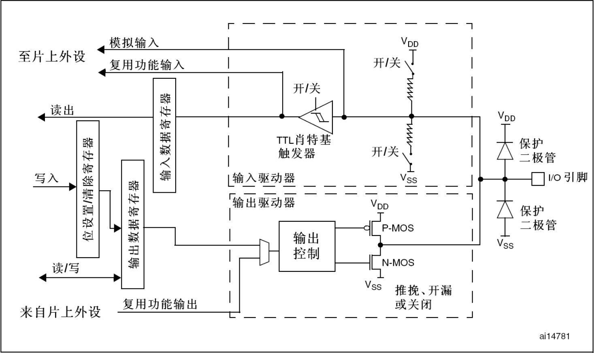
图2-1 STM32F4 系列 IO 端口基本结构
F4 系列 IO 端口采用施密特触发器对输入信号进行整形，且上下拉电阻配置灵活，在输出模式下也可使用内部上下拉。
F4 系列 IO 结构由四大核心部件组成：
2.1 保护二极管
位于 IO 引脚与 VDD / VSS 之间。当输入电压高于 VDD 时，上方二极管导通将电流泄放到 VDD；当输入电压低于 VSS（地）时，下方二极管导通。作用是防止过压/负压损坏引脚。注意：这仅对小幅超限有效，若接入真正的 5V 信号仍需外部限流电阻。
2.2 内部上拉、下拉电阻
通过开关控制是否接入 VDD（上拉）或 VSS（下拉）。可通过 PUPDR 寄存器配置。上拉使引脚默认为高电平，下拉使引脚默认为低电平，用于输入模式下确定空闲电平。
2.3 施密特触发器
施密特触发器是一种整形电路，可将非标准方波（如正弦波、带噪声的信号）整形成标准方波。它具有两个阈值：正向阈值电压和负向阈值电压。
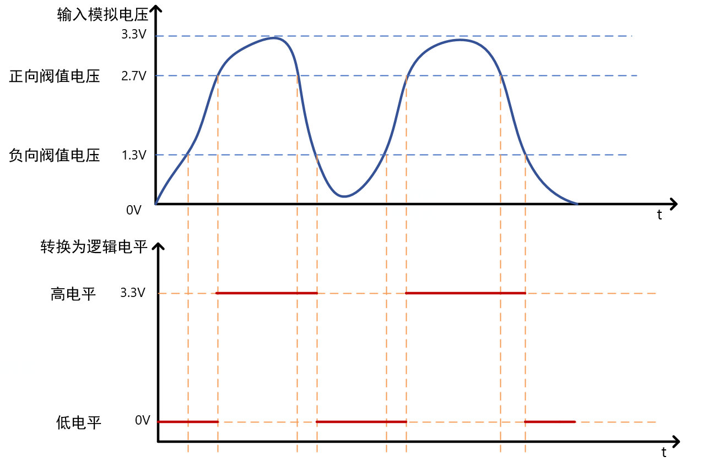
图2-3 施密特触发器整形原理：正弦波 → 标准方波
工作特性：输入电压高于正向阈值 → 输出高；低于负向阈值 → 输出低；介于两者之间 → 输出保持不变（迟滞特性）。这种特性使它能有效滤除信号噪声。输入数据最终存入输入数据寄存器（IDR），可供 CPU 读取。
2.4 P-MOS 与 N-MOS 管
输出驱动器由一个 P-MOS 和一个 N-MOS 管组成，是推挽/开漏输出的物理基础。MOS 管是压控型元件，通过控制栅源电压 Vgs 决定导通与否：
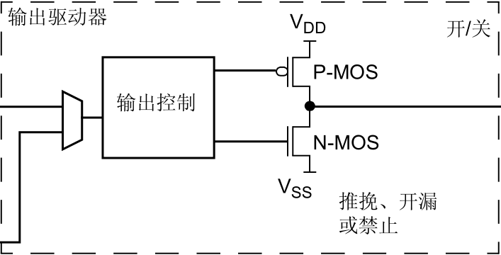
图2-4 输出驱动器中的 P-MOS 与 N-MOS 管
· P-MOS：Vgs < 0 时导通，可将引脚拉向 VDD（高电平）；
· N-MOS：Vgs > 0 时导通，可将引脚拉向 VSS（低电平）。
推挽输出时两个 MOS 管交替导通，可输出高/低电平；开漏输出时 P-MOS 始终截止，只有 N-MOS 工作，只能输出低电平，输出高电平需外部上拉。
三、GPIO 的八种模式
GPIO 支持 8 种工作模式，分为4 种输入模式和4 种输出模式。下表为总览：
| 模式 | 特点及应用 |
|---|
| 输入浮空 | 输入用，完全浮空，状态不定 |
| 输入上拉 | 输入用，内部上拉，默认高电平 |
| 输入下拉 | 输入用，内部下拉，默认低电平 |
| 模拟功能 | ADC 采集 / DAC 输出 |
| 开漏输出 | 软件 IIC 的 SDA、SCL 等 |
| 推挽输出 | 驱动能力强（最大 25mA），通用输出 |
| 开漏式复用功能 | 硬件 IIC 的 SDA、SCL 引脚等 |
| 推挽式复用功能 | SPI 的 SCK、MISO、MOSI 引脚等 |
3.1 输入浮空
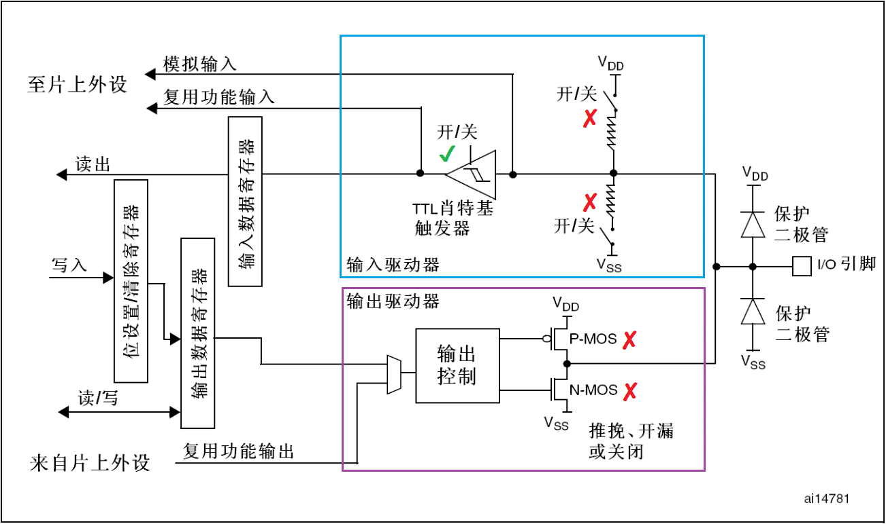
图3-1 输入浮空模式
上拉电阻关闭、下拉电阻关闭、施密特触发器打开、双 MOS 管不导通。特点：空闲时 IO 状态不确定，完全由外部环境决定。通常用于外部已有明确上下拉的输入场合。
3.2 输入上拉
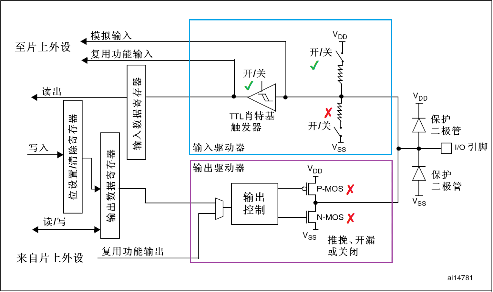
图3-2 输入上拉模式
上拉电阻打开、下拉电阻关闭、施密特触发器打开、双 MOS 管不导通。特点：空闲时 IO 呈现高电平。常用于按键输入（按键另一端接地，按下时读低电平）。
3.3 输入下拉
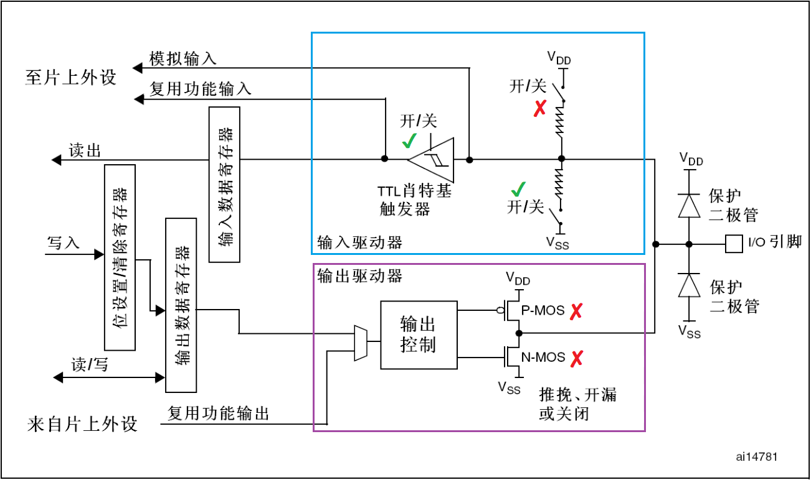
图3-3 输入下拉模式
上拉电阻关闭、下拉电阻打开、施密特触发器打开、双 MOS 管不导通。特点：空闲时 IO 呈现低电平。常用于按键另一端接 VCC 的输入场合。
3.4 模拟功能
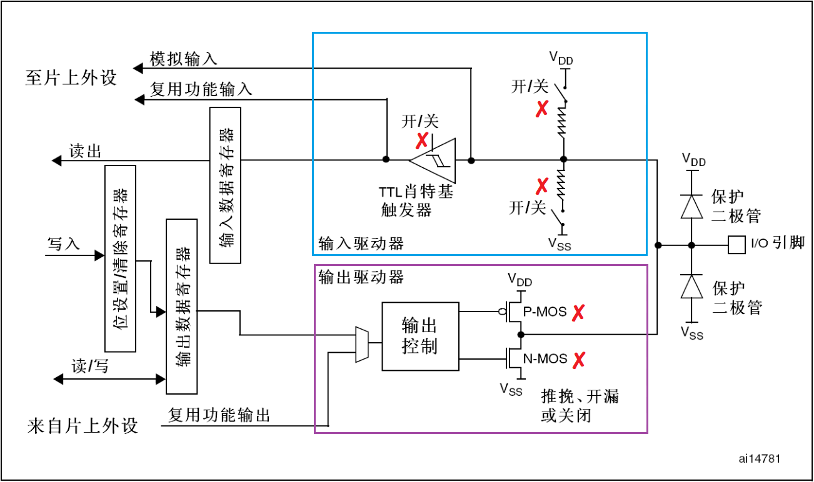
图3-4 模拟功能模式
上拉电阻关闭、下拉电阻关闭、施密特触发器关闭、双 MOS 管不导通。特点：专门用于模拟信号输入或输出，如 ADC 采集和 DAC 输出。关闭施密特触发器可减少数字电路对模拟信号的干扰。
3.5 开漏输出
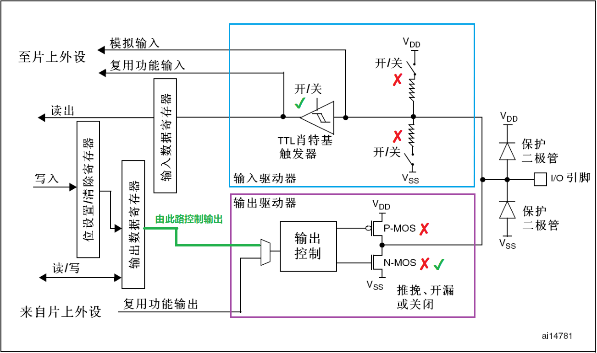
图3-5 开漏输出模式
上拉、下拉电阻关闭，施密特触发器打开，P-MOS 始终不导通。往 ODR 对应位写 0 时 N-MOS 导通（输出低），写 1 时 N-MOS 不导通（引脚悬空）。特点：不能输出高电平，必须有外部（或内部）上拉才能输出高电平。常用于软件模拟 IIC、线与逻辑、多设备总线。
3.6 开漏式复用功能
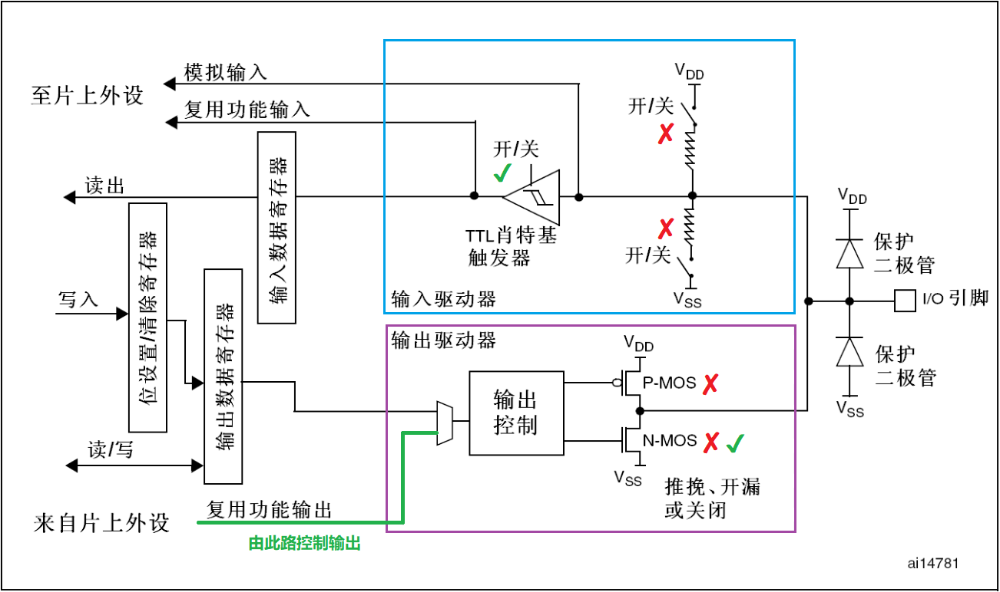
图3-6 开漏式复用功能模式
与开漏输出类似，P-MOS 不导通，但输出由片上外设控制（而非 ODR 寄存器）。特点：由硬件外设（如 IIC 控制器）驱动输出，典型应用为硬件 IIC 的 SDA、SCL 引脚。
3.7 推挽输出
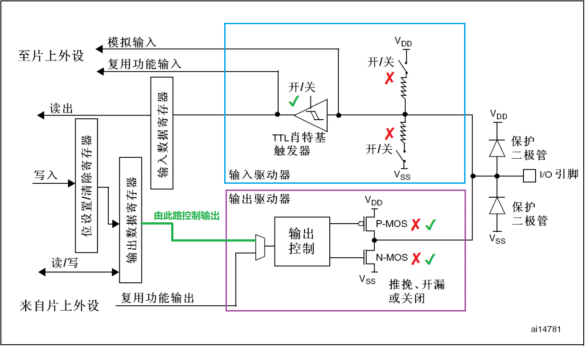
图3-7 推挽输出模式
上拉、下拉电阻关闭，施密特触发器打开。往 ODR 写 0 时 N-MOS 导通（输出低），写 1 时 P-MOS 导通（输出高）。特点：可输出高低电平，驱动能力强（最大 25mA）。是最常用的通用输出模式，常用于驱动 LED、蜂鸣器等。
3.8 推挽式复用功能
图3-8 推挽式复用功能模式
与推挽输出类似，可输出高低电平，但输出由片上外设控制。特点：由硬件外设驱动输出，典型应用为 SPI 的 SCK、MISO、MOSI，USART 的 TX 等引脚。
四、GPIO 寄存器介绍
STM32F4 系列每组 GPIO 包含 8 个通用寄存器，将模式、输出类型、输出速度、上下拉拆分为独立寄存器，配置清晰直观。下表为 F4 系列 GPIO 寄存器总览：
| 寄存器 | 名称 | 作用 |
|---|
| MODER | 端口模式寄存器 | 设置输入/输出/复用/模拟模式 |
| OTYPER | 端口输出类型寄存器 | 设置推挽/开漏输出 |
| OSPEEDR | 端口输出速度寄存器 | 设置输出速度等级 |
| PUPDR | 端口上下拉寄存器 | 设置上拉/下拉电阻 |
| IDR | 端口输入数据寄存器 | 读取 IO 引脚电平 |
| ODR | 端口输出数据寄存器 | 设置 IO 引脚输出电平 |
| BSRR | 端口置位/复位寄存器 | 原子地设置 ODR 某一位 |
| LCKR | 端口配置锁定寄存器 | 锁定配置（防止误修改） |
4.1 MODER — 端口模式寄存器
每位 IO 占用 2 位，共 32 位，用于配置 16 个引脚的工作模式。
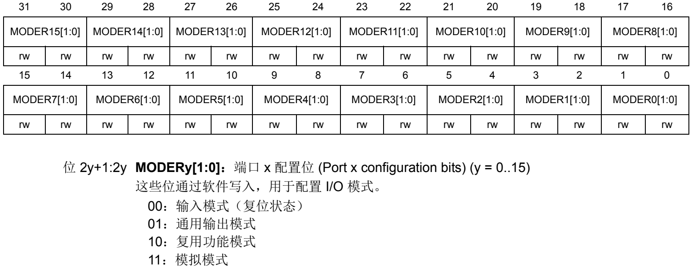
图4-1 GPIO 端口模式寄存器（MODER）
MODERy[1:0] 取值含义：00=输入模式（复位默认），01=通用输出模式，10=复用功能模式，11=模拟模式。
4.2 OTYPER — 端口输出类型寄存器
每位 IO 占用 1 位，仅低 16 位有效，用于配置输出模式下的输出类型。
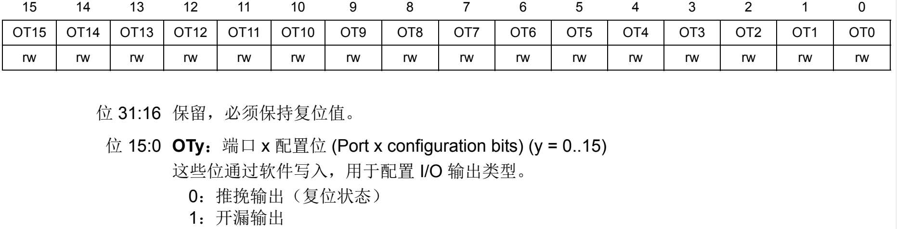
图4-2 GPIO 端口输出类型寄存器（OTYPER）
OTy 取值含义：0=推挽输出（复位默认），1=开漏输出。该寄存器仅在输出模式或复用功能模式下生效。
4.3 OSPEEDR — 端口输出速度寄存器
每位 IO 占用 2 位，共 32 位，用于配置输出信号的翻转速度。
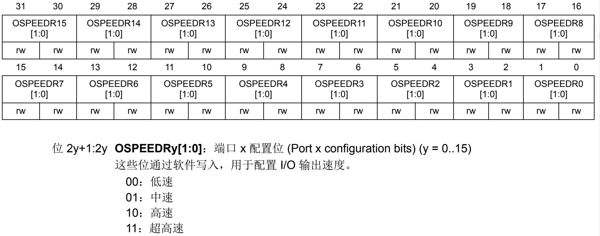
图4-3 GPIO 端口输出速度寄存器（OSPEEDR）
OSPEEDRy[1:0] 取值含义：00=低速（2MHz），01=中速（25MHz），10=高速（50MHz），11=超高速（100MHz，需 VDD 较高）。速度越高，EMI 越大，实际按需选择。
4.4 PUPDR — 端口上下拉寄存器
每位 IO 占用 2 位，共 32 位，用于配置内部上拉/下拉电阻。
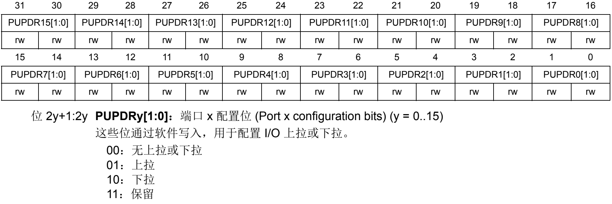
图4-4 GPIO 端口上拉/下拉寄存器（PUPDR）
PUPDRy[1:0] 取值含义：00=无上拉或下拉，01=上拉，10=下拉，11=保留。F4 系列在输出模式下也可启用内部上下拉电阻。
4.5 IDR / ODR / BSRR — 数据寄存器
IDR（输入数据寄存器）：低 16 位有效，每位对应一个引脚电平，只读。CPU 通过读取 IDR 获得当前 IO 状态。
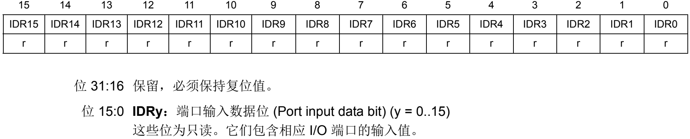
图4-5 GPIO 端口输入数据寄存器（IDR）
ODR（输出数据寄存器）：低 16 位有效，每位对应一个引脚的输出电平，可读可写。
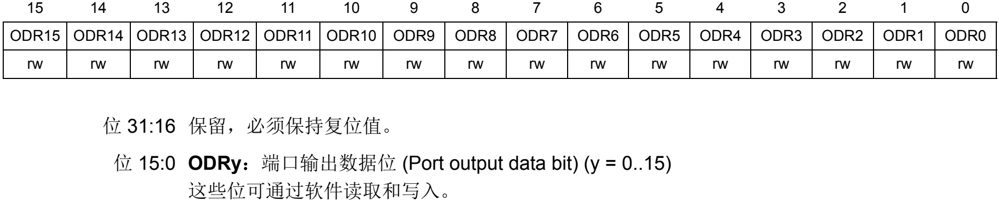
图4-6 GPIO 端口输出数据寄存器（ODR）
BSRR（置位/复位寄存器）：高 16 位 BR[15:0] 用于复位（清 0），低 16 位 BS[15:0] 用于置位（写 1），只写。
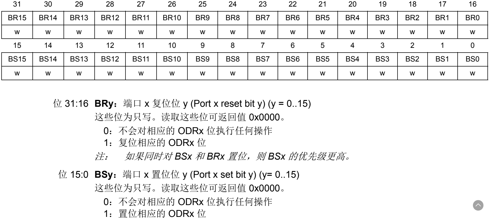
图4-7 GPIO 端口置位/复位寄存器（BSRR）
ODR 与 BSRR 的区别：
/* ODR 修改：读 → 改 → 写（非原子，有中断风险） */
GPIOB->ODR |= 1 << 3; /* PB3 = 1 */
/* BSRR 修改：只写（原子操作，无中断风险） */
GPIOB->BSRR = 0x00000008; /* PB3 = 1，推荐使用 */
ST 官方建议：优先使用 BSRR 控制输出，因为 ODR 的"读-改-写"操作在被中断打断时可能出错，而 BSRR 是单次写操作，无此风险。
4.6 八种模式的寄存器配置对照
下表总结了 8 种模式下各寄存器的配置取值，配置时直接查表即可：
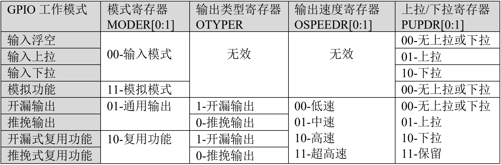
图4-8 GPIO 八种工作模式与寄存器配置对照表
五、GPIO 配置步骤
5.1 通用外设驱动模型（四步法）
STM32 任意外设的驱动开发都可归纳为四步：
1. 初始化 —— 时钟设置、参数设置、IO 设置、中断设置（可选）
2. 读函数（可选）—— 从外设读取数据
3. 写函数（可选）—— 往外设写入数据
4. 中断服务函数（可选）—— 根据中断标志处理外设事务
5.2 GPIO 配置四步及 HAL 函数详解
对应 GPIO 的具体操作如下：
| 步骤 | HAL 库函数 | 对应寄存器 | 说明 |
|---|
| 1. 使能时钟 | __HAL_RCC_GPIOx_CLK_ENABLE() | RCC_AHB1ENR | 开启对应 GPIO 端口时钟 |
| 2. 设置工作模式 | HAL_GPIO_Init() | MODER / OTYPER / OSPEEDR / PUPDR | 配置引脚模式、输出类型、速度、上下拉 |
| 3. 写输出（可选） | HAL_GPIO_WritePin() / HAL_GPIO_TogglePin() | BSRR | 控制 IO 输出高/低电平或翻转 |
| 4. 读输入（可选） | HAL_GPIO_ReadPin() | IDR | 读取 IO 引脚当前电平 |
下面对每个 HAL 函数的参数和用法进行详细说明：
① __HAL_RCC_GPIOx_CLK_ENABLE() —— 使能 GPIO 时钟
/* GPIO 时钟使能宏，x 可取 A~I，对应 GPIOA~GPIOI */
__HAL_RCC_GPIOA_CLK_ENABLE(); // 使能 GPIOA 时钟，操作 RCC_AHB1ENR 寄存器第 0 位
__HAL_RCC_GPIOB_CLK_ENABLE(); // 使能 GPIOB 时钟，操作 RCC_AHB1ENR 寄存器第 1 位
__HAL_RCC_GPIOI_CLK_ENABLE(); // 使能 GPIOI 时钟
/* 注意：使用任何 GPIO 引脚前，必须先使能对应端口的时钟，
否则操作寄存器无效。这是新手最容易忽略的一步。 */
② HAL_GPIO_Init(GPIOx, *GPIO_InitStruct) —— 初始化 GPIO
/* 函数原型：void HAL_GPIO_Init(GPIO_TypeDef *GPIOx, GPIO_InitTypeDef *GPIO_InitStruct) */
/* 参数1：GPIOx —— 指向 GPIO 端口基地址的指针，如 GPIOB */
/* 参数2：GPIO_InitStruct —— 指向 GPIO_InitTypeDef 结构体的指针，包含配置参数 */
/* 作用：根据结构体参数，一次性写入 MODER / OTYPER / OSPEEDR / PUPDR 四个寄存器 */
HAL_GPIO_Init(GPIOB, &GPIO_InitStruct);
/* 注意：调用前必须先 __HAL_RCC_GPIOB_CLK_ENABLE() */
③ HAL_GPIO_WritePin(GPIOx, GPIO_Pin, PinState) —— 设置输出电平
/* 函数原型：void HAL_GPIO_WritePin(GPIO_TypeDef *GPIOx, uint16_t GPIO_Pin, GPIO_PinState PinState) */
/* 参数1：GPIOx —— 端口基地址 */
/* 参数2：GPIO_Pin —— 引脚号，如 GPIO_PIN_1（对应宏 ((uint16_t)0x0002)） */
/* 参数3：PinState —— 电平状态：GPIO_PIN_RESET（0，输出低）或 GPIO_PIN_SET（1，输出高） */
/* 作用：内部操作 BSRR 寄存器，原子地设置或清除 ODR 的对应位 */
HAL_GPIO_WritePin(GPIOB, GPIO_PIN_1, GPIO_PIN_RESET); // PB1 输出低电平
HAL_GPIO_WritePin(GPIOB, GPIO_PIN_1, GPIO_PIN_SET); // PB1 输出高电平
④ HAL_GPIO_TogglePin(GPIOx, GPIO_Pin) —— 翻转输出电平
/* 函数原型：void HAL_GPIO_TogglePin(GPIO_TypeDef *GPIOx, uint16_t GPIO_Pin) */
/* 作用：将指定引脚的 ODR 对应位取反（0→1 或 1→0），即高变低、低变高 */
/* 常用于 LED 闪烁、周期信号输出等场景 */
HAL_GPIO_TogglePin(GPIOB, GPIO_PIN_1); // PB1 电平翻转
⑤ HAL_GPIO_ReadPin(GPIOx, GPIO_Pin) —— 读取输入电平
/* 函数原型：GPIO_PinState HAL_GPIO_ReadPin(GPIO_TypeDef *GPIOx, uint16_t GPIO_Pin) */
/* 返回值：GPIO_PIN_RESET（0，低电平）或 GPIO_PIN_SET（1，高电平） */
/* 作用：读取 IDR 寄存器对应位的值，返回当前引脚的输入电平 */
GPIO_PinState state = HAL_GPIO_ReadPin(GPIOE, GPIO_PIN_4); // 读取 PE4 电平
if (state == GPIO_PIN_RESET) {
// 低电平处理逻辑
}
5.3 GPIO 初始化结构体字段详解
HAL 库通过 GPIO_InitTypeDef 结构体配置引脚参数，包含以下 5 个字段：
typedef struct
{
uint32_t Pin; /* 引脚号 */
uint32_t Mode; /* 工作模式 */
uint32_t Pull; /* 上拉/下拉 */
uint32_t Speed; /* 输出速度 */
uint32_t Alternate; /* 复用功能编号 */
} GPIO_InitTypeDef;
| 字段 | 可选值 | 含义 |
|---|
Pin | GPIO_PIN_0 ~ GPIO_PIN_15 | 要配置的引脚号，可多个用 | 组合，如 GPIO_PIN_0 | GPIO_PIN_1 |
Mode | GPIO_MODE_INPUT | 输入模式 |
GPIO_MODE_OUTPUT_PP | 推挽输出 |
GPIO_MODE_OUTPUT_OD | 开漏输出 |
GPIO_MODE_AF_PP | 推挽复用输出 |
GPIO_MODE_AF_OD | 开漏复用输出 |
GPIO_MODE_ANALOG | 模拟模式 |
GPIO_MODE_IT_RISING | 外部中断，上升沿触发 |
GPIO_MODE_IT_FALLING | 外部中断，下降沿触发 |
Pull | GPIO_NOPULL | 无上下拉 |
GPIO_PULLUP | 内部上拉 |
GPIO_PULLDOWN | 内部下拉 |
Speed | GPIO_SPEED_FREQ_LOW | 低速（2MHz） |
GPIO_SPEED_FREQ_MEDIUM | 中速（25MHz） |
GPIO_SPEED_FREQ_HIGH | 高速（50MHz） |
GPIO_SPEED_FREQ_VERY_HIGH | 超高速（100MHz） |
Alternate | GPIO_AF0_GPIO ~ GPIO_AF15_EVENTOUT | 复用功能编号，仅在 AF 模式下使用，如 GPIO_AF7_USART1 |
5.4 配置示例：点亮一个 LED（推挽输出）
以阿波罗 F429 开发板为例，LED 连接在 PB1（低电平点亮，因为 LED 阴极接 PB1、阳极经电阻接 VCC）。硬件原理：PB1 输出低电平时，电流从 VCC 经电阻、LED 流向 PB1，LED 点亮；PB1 输出高电平时，LED 两端无压差，熄灭。
/* ============================================================
LED 驱动函数：GPIO 输出模式配置 + 电平控制
硬件连接：LED(阳极) - 电阻 - VCC；LED(阴极) - PB1
逻辑：PB1 输出低 → LED 亮；PB1 输出高 → LED 灭
============================================================ */
/* LED 引脚宏定义，方便移植时统一修改 */
#define LED_GPIO_PORT GPIOB // LED 所在端口
#define LED_GPIO_PIN GPIO_PIN_1 // LED 所在引脚 PB1
#define LED_GPIO_CLK __HAL_RCC_GPIOB_CLK_ENABLE // LED 端口时钟
#define LED_ON() HAL_GPIO_WritePin(LED_GPIO_PORT, LED_GPIO_PIN, GPIO_PIN_RESET) // 亮
#define LED_OFF() HAL_GPIO_WritePin(LED_GPIO_PORT, LED_GPIO_PIN, GPIO_PIN_SET) // 灭
#define LED_TOGGLE() HAL_GPIO_TogglePin(LED_GPIO_PORT, LED_GPIO_PIN) // 翻转
/* LED 初始化函数 */
void LED_Init(void)
{
GPIO_InitTypeDef GPIO_InitStruct; // 定义 GPIO 初始化结构体变量
LED_GPIO_CLK(); // 步骤1：使能 GPIOB 时钟
GPIO_InitStruct.Pin = LED_GPIO_PIN; // 步骤2.1：选择引脚 PB1
GPIO_InitStruct.Mode = GPIO_MODE_OUTPUT_PP; // 步骤2.2：推挽输出模式，可输出高/低电平
GPIO_InitStruct.Pull = GPIO_NOPULL; // 步骤2.3：无上下拉（推挽输出不需要上下拉）
GPIO_InitStruct.Speed = GPIO_SPEED_FREQ_HIGH; // 步骤2.4：输出速度设为高速（50MHz）
HAL_GPIO_Init(LED_GPIO_PORT, &GPIO_InitStruct); // 步骤2.5：调用 HAL 库写入配置
LED_OFF(); // 步骤3：默认关闭 LED（输出高电平）
}
/* LED 闪烁示例（放在 main 循环中） */
while (1)
{
LED_ON(); // 点亮 LED
HAL_Delay(500); // 延时 500ms（需 SysTick 支持）
LED_OFF(); // 熄灭 LED
HAL_Delay(500); // 延时 500ms
}
5.5 配置示例：按键输入（输入上拉）
按键连接在 PE4（一端接 PE4，另一端接 GND）。配置为输入上拉：松开时 PE4 被内部上拉到高电平；按下时 PE4 被按键短接到 GND，读到低电平。
/* ============================================================
按键驱动函数：GPIO 输入模式 + 软件消抖
硬件连接：KEY(一端) - PE4；KEY(另一端) - GND
逻辑：松开 → PE4 高电平；按下 → PE4 低电平
============================================================ */
/* 按键引脚宏定义 */
#define KEY_GPIO_PORT GPIOE
#define KEY_GPIO_PIN GPIO_PIN_4
#define KEY_GPIO_CLK __HAL_RCC_GPIOE_CLK_ENABLE()
/* 按键初始化函数 */
void KEY_Init(void)
{
GPIO_InitTypeDef GPIO_InitStruct;
KEY_GPIO_CLK(); // 步骤1：使能 GPIOE 时钟
GPIO_InitStruct.Pin = KEY_GPIO_PIN; // 步骤2.1：选择引脚 PE4
GPIO_InitStruct.Mode = GPIO_MODE_INPUT; // 步骤2.2：输入模式
GPIO_InitStruct.Pull = GPIO_PULLUP; // 步骤2.3：上拉，使引脚默认为高电平
// 输入模式下 Speed 和 Alternate 字段无效，无需配置
HAL_GPIO_Init(KEY_GPIO_PORT, &GPIO_InitStruct); // 步骤2.4：调用 HAL 库写入配置
}
/* 按键扫描函数，带软件消抖
返回值：1 表示按键按下，0 表示按键松开 */
uint8_t KEY_Scan(void)
{
// 步骤3：读取 PE4 的电平状态
if (HAL_GPIO_ReadPin(KEY_GPIO_PORT, KEY_GPIO_PIN) == GPIO_PIN_RESET)
{
HAL_Delay(20); // 软件消抖：延时 20ms 跳过机械抖动
// 再次确认按键是否真的按下（排除抖动误判）
if (HAL_GPIO_ReadPin(KEY_GPIO_PORT, KEY_GPIO_PIN) == GPIO_PIN_RESET)
{
// 等待按键松开（松手检测），避免长按重复触发
while (HAL_GPIO_ReadPin(KEY_GPIO_PORT, KEY_GPIO_PIN) == GPIO_PIN_RESET);
return 1; // 返回按键按下
}
}
return 0; // 按键未按下
}
/* 按键控制 LED 示例（放在 main 循环中） */
while (1)
{
if (KEY_Scan() == 1)
{
LED_TOGGLE(); // 每按一次按键，LED 状态翻转一次
}
}
软件消抖原理：机械按键按下/释放瞬间，金属触点会产生几毫秒的电平抖动（非理想的高低跳变）。通过延时（如 20ms）跳过抖动区间，再重新读取电平，可有效避免误触发。延时时间一般取 10~30ms，根据按键质量调整。
5.6 寄存器级配置示例（直接操作寄存器）
除了使用 HAL 库，也可以直接操作寄存器配置 GPIO。以 PB1 推挽输出为例：
/* 直接寄存器操作：配置 PB1 为推挽输出 */
/* 1. 使能 GPIOB 时钟（RCC_AHB1ENR 寄存器第 1 位置 1） */
RCC->AHB1ENR |= (1 << 1);
/* 2. 配置 MODER：PB1 模式位为 MODER1[1:0]，对应位 3~2
01 = 通用输出模式 */
GPIOB->MODER &= ~(3 << 2); // 清除 MODER1[1:0]（位3、位2清零）
GPIOB->MODER |= (1 << 2); // 设置 MODER1 = 01（通用输出）
/* 3. 配置 OTYPER：PB1 输出类型位 OT1，对应位 1
0 = 推挽输出 */
GPIOB->OTYPER &= ~(1 << 1); // OT1 = 0（推挽）
/* 4. 配置 OSPEEDR：PB1 速度位 OSPEEDR1[1:0]，对应位 3~2
10 = 高速 */
GPIOB->OSPEEDR &= ~(3 << 2); // 清除 OSPEEDR1[1:0]
GPIOB->OSPEEDR |= (2 << 2); // OSPEEDR1 = 10（高速）
/* 5. 配置 PUPDR：PB1 上下拉位 PUPDR1[1:0]，对应位 3~2
00 = 无上下拉 */
GPIOB->PUPDR &= ~(3 << 2); // PUPDR1 = 00（无上下拉）
/* 6. 控制输出电平（操作 BSRR 寄存器，原子操作） */
GPIOB->BSRR = (1 << 1); // BS1 = 1，PB1 输出高电平（LED 灭）
GPIOB->BSRR = (1 << (1 + 16)); // BR1 = 1，PB1 输出低电平（LED 亮）
5.7 完整工程示例：main.c 与 LED/KEY 模块化
实际项目中，通常将 GPIO 配置封装为独立的驱动文件，main.c（用户应用层代码，位于 User/ 目录）只做调用。以下是正点原子风格的工程目录结构和关键代码：
/* 工程目录结构（正点原子风格） */
Project/
├── User/ // 用户应用层代码
│ ├── main.c // 主函数（用户编写）
│ ├── main.h // 主头文件
│ ├── stm32f4xx_it.c // 中断服务函数
│ └── stm32f4xx_hal_msp.c // HAL 库 MSP 初始化
├── HARDWARE/ // 硬件驱动层（板级支持包 BSP）
│ ├── LED/
│ │ ├── led.c // LED 驱动实现
│ │ └── led.h // LED 驱动接口
│ └── KEY/
│ ├── key.c // 按键驱动实现
│ └── key.h // 按键驱动接口
├── SYSTEM/ // 系统核心文件
│ ├── sys/ // 系统初始化
│ ├── delay/ // 延时函数
│ └── usart/ // 串口调试
├── CORE/ // 内核与启动文件
│ ├── startup_stm32f429xx.s // 启动文件
│ ├── stm32f4xx_hal_conf.h // HAL 库配置
│ └── system_stm32f4xx.c // 系统时钟配置
└── DRIVERS/ // 外设驱动库
└── STM32F4xx_HAL_Driver/ // HAL 库源码
/* ===== HARDWARE/LED/led.c + HARDWARE/KEY/key.c 中的 GPIO 配置
（正点原子风格：GPIO 初始化直接写在各硬件驱动文件中） ===== */
/* LED 初始化：配置 PB1 为推挽输出 */
void LED_Init(void)
{
GPIO_InitTypeDef GPIO_InitStruct = {0};
__HAL_RCC_GPIOB_CLK_ENABLE();
GPIO_InitStruct.Pin = GPIO_PIN_1;
GPIO_InitStruct.Mode = GPIO_MODE_OUTPUT_PP;
GPIO_InitStruct.Pull = GPIO_NOPULL;
GPIO_InitStruct.Speed = GPIO_SPEED_FREQ_HIGH;
HAL_GPIO_Init(GPIOB, &GPIO_InitStruct);
HAL_GPIO_WritePin(GPIOB, GPIO_PIN_1, GPIO_PIN_SET); // 默认熄灭
}
/* KEY 初始化：配置 PE4 为输入上拉 */
void KEY_Init(void)
{
GPIO_InitTypeDef GPIO_InitStruct = {0};
__HAL_RCC_GPIOE_CLK_ENABLE();
GPIO_InitStruct.Pin = GPIO_PIN_4;
GPIO_InitStruct.Mode = GPIO_MODE_INPUT;
GPIO_InitStruct.Pull = GPIO_PULLUP;
HAL_GPIO_Init(GPIOE, &GPIO_InitStruct);
}
/* ===== User/main.c ===== */
#include "main.h"
#include "led.h"
#include "key.h"
/* 系统时钟配置 */
void SystemClock_Config(void);
int main(void)
{
/* 1. 硬件抽象层初始化 */
HAL_Init(); // 初始化 HAL 库（SysTick、NVIC 优先级分组等）
SystemClock_Config(); // 配置系统时钟（如 168MHz）
/* 2. 外设初始化（LED + KEY） */
LED_Init(); // 调用 HARDWARE/LED/led.c 中的初始化
KEY_Init(); // 调用 HARDWARE/KEY/key.c 中的初始化
/* 3. 主循环 */
while (1)
{
/* 检测按键，按下则翻转 LED */
if (KEY_Scan() == 1)
{
LED_TOGGLE(); // LED 状态翻转
}
}
}
总结：GPIO 配置的核心就是"使能时钟 → 配置模式 → 读写电平"三步。HAL 库通过结构体一次性配置 MODER/OTYPER/OSPEEDR/PUPDR 四个寄存器，屏蔽了位操作细节；而直接操作寄存器则更贴近硬件本质，有助于理解底层原理。实际开发中推荐使用 HAL 库以提高效率，同时理解寄存器配置以加深理解。